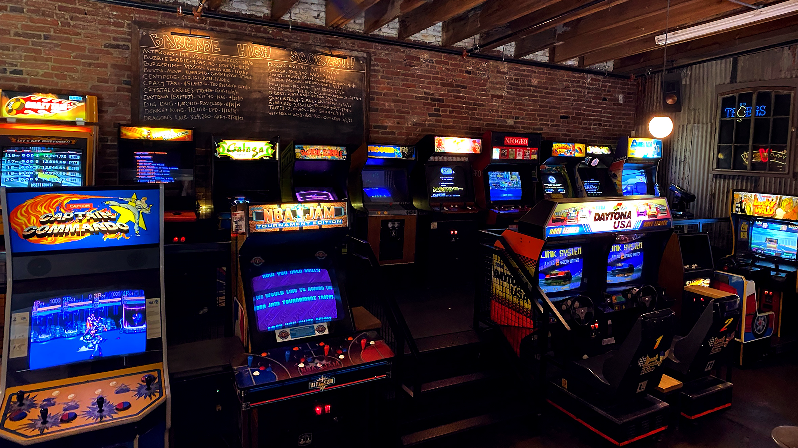
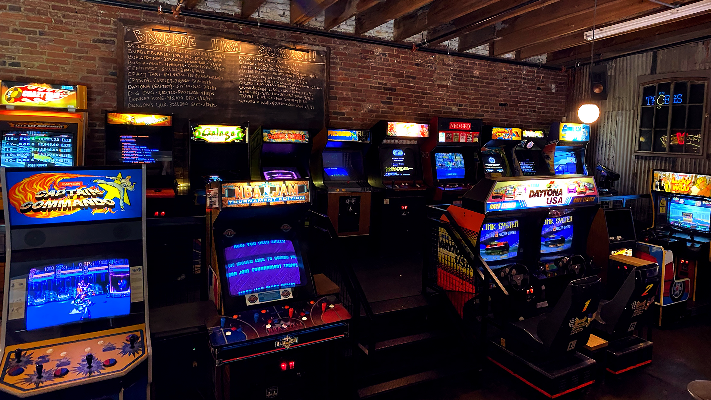
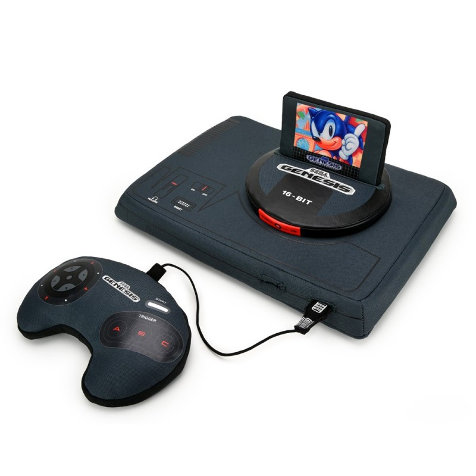

Histoire de l'Arcade
Vous retrouverez ici l'histoire chronologique de l'arcade de ses débuts à aujourd'hui. On y raconte ses innovations, comment ce type de jeu évolue mais également ses déboires.
L'arcade à été une pièce maîtresse concernant l'évolution du jeu-vidéo aujourd'hui. On peut dire clairement que c'est son ancêtre.
1958 : Débuts
Willy Higinbotham, qui a créé un jeu de tennis de table en 1958 appelé
Tennis for
Two qui est considéré comme l’un des premiers jeux vidéo
de l’histoire.
Le jeu est développé sur un ordinateur analogique Donner Model 30 dédié et relié à un oscilloscope qui sert d'écran. Le concept est présenté en 1958 et 1959 lors des portes ouvertes du laboratoire national de Brookhaven.
Le jeu est crée en l'espace de quelques semaines, il a pour but de montrer les avancées technologiques au grand public.

Affichage du jeu sur oscilloscope
Reproduction fidèle au jeu original (2007)
1970+ : Croissance du genre
L’histoire “officielle” des jeux d’arcade remonte donc aux années 1970, lorsque Galaxy
Game, le premier jeu vidéo sur borne d'arcade fût crée en septembre 1971 et lorsque les
premiers jeux d’arcade connus tels que Pong et Space Invaders ont été lancés.
Ces jeux ont
rapidement gagné en
popularité et ont donné naissance à une nouvelle industrie.
Les salles d’arcade ont fleuri dans le monde
entier, attirant des foules de joueurs en quête de divertissement et de défis.
Space Invaders

Pong Game
A ses débuts, le jeu d'arcade est un style limité dû aux limitations techniques du
matériel informatique à cette époque.
Tous les styles de jeux (course, shoot them up, aventure, sport...) prennent vie avec de simples jeux à
cette époque.
Le style "arcade" commence
sa croissance grandissante dû aux petits jeux d'entreprises qui fleurissent et aux recherches à un matériel
plus
performant.
Voici ci-dessous deux gameplays de Space Invaders et de Pong :
1972 : Débuts d'entreprises
Nolan Bushnell et Ted Dabney, qui ont fondé Atari en 1972 et ont lancé le premier jeu
d’arcade commercialement réussi, la fameux jeu Pong sous borne d'arcade.
Atari est une marque historique de l'industrie vidéoludique. C'est l'entreprise considérée comme pionnière
et fondatrice de l'industrie du jeu vidéo.
En septembre 1972, Atari commercialise alors la toute première console de jeux vidéo pour
particuliers : la Magnavox Odyssey.
La mise sur le marché ont engendré une réponse enthousiaste du
public vis-à-vis de celle-ci.
Le logo d'Atari
La Magnavox Odyssey
1978 : L'arcade est née !
Taito qui a sorti le jeu Space Invaders en 1978, qui est devenu l’un des premiers grands
succès mondiaux de l’industrie des jeux d’arcade.
Ou encore Asteroids considéré comme un
classique de l'histoire du jeu vidéo.
Cette année marque un tournant dans l'histoire du jeu-vidéo dû à la première apparition du
légendaire Nintendo que l'on connaît aujourd'hui dans le domaine des jeux-vidéos avec une borne d'arcade
pour un jeu d'othello.
Les consoles de salon deuxième font leur apparition au public dans cette période
avec la Fairchild Channel F (1976), ou encore l'Atari 2600 (1977).
Asteroids gameplay
Fairchild Channel-F

Atari 2600
1980+ : L'âge d'or de l'arcade
Les années 1980 ont été considérées comme l’âge d’or des jeux d’arcade, avec des titres
emblématiques tels que Pac-Man, Donkey Kong et Galaga qui ont dominé les salles d’arcade. Ces jeux ont été
des succès commerciaux énormes et ont défini une génération de joueurs.
Les jeux d’arcade ont également
influencé la culture populaire, avec des personnages tels que Mario et Sonic devenant des icônes mondiales.

Pacman (1980)

Donkey-Kong (1981)

Galaga (1981)
POV: 1980 Devs
L'âge d'or fut un moment de grande créativité technique et conceptuelle pour les jeux
vidéo d'arcade.
Les jeux ont été développés autour d'une grande variété de genres alors que les concepteurs
devaient frôler les limites strictes de la puissance de calcul du processeur et de la mémoire disponible.
Cette période a également vu l'émergence de salles d'arcade, des lieux consacrés exclusivement aux jeux
d'arcade.
À cette époque, les bornes d'arcade commencent à apparaître dans les supermarchés, les
stations-services et
beaucoup d'autres commerces au détail désireux de trouver des revenus supplémentaires.
Les jeux populaires
ont
alors occasionnellement causé des bousculades d'adolescents, pressés d'essayer la dernière attraction
vidéoludique.
 

L'énorme popularité des jeux d'arcade a également mené aux tous premiers guides de
stratégie de jeu vidéo. Ces guides, difficiles à trouver aujourd'hui, présentent dans le détail le modèle et
la stratégie de chaque jeu, y compris leurs variations, à un degré tel que rares sont les guides qui depuis
s'en approchent.
Le débordement de score, ramenant à zéro les scores trop élevés est souvent le dernier défi
auquel doit faire face un joueur expérimenté.
1990+ : Un style délaissé...
Cependant, l’émergence des jeux vidéo à domicile dans les années 1990 avec la popularité
croissante des consoles de jeux telles que la Nintendo Entertainment System (NES) et la Sega Genesis a eu un
impact décisif sur l’industrie des jeux d’arcade.
Les joueurs ont commencé à préférer jouer à des jeux vidéo
chez eux plutôt que de se rendre dans les salles d’arcade, ce qui a entraîné un déclin de la popularité des
jeux d’arcade.
NES
Sega Genesis
La qualité, le coût et le confort d’utilisation des consoles de jeux auront petit à petit raison des bornes et autres machines et simulateurs.
Malgré tout, elles continuent d’exister dans les lieux touristiques, quelques bistrots et salles de jeux, aux côtés de flippers, baby-foot, fléchettes et autre billards ou air hockey... Mais aussi dans les fêtes foraines, entre la machine à grappin et le punchingball…
Aujourd'hui : Fin d'une ère ?
Malgré cela, les jeux d’arcade ont réussi à se réinventer et continuent de passionner nombre de personnes à travers le monde. En témoigne notamment l’émergence du concept novateur des bornes d’arcade solidaires, développée par Arcade for Good en 2020. Ou encore la standardisation des systèmes multi-jeux sur borne d’arcade, permettant de retrouver des milliers de jeux d’arcade sur une seule machine (au lieu d’un poignée comme avant).
Mais malgré les innovations données pour redorer cet âge d'or d'un ancien temps, aujourd'hui, d'autres types de supports ont clairement pris le dessus au niveau de la façon de consommer du jeu-vidéo.
On peut par exemple noter que les consoles de salons, PC de haute qualité et consoles portables attire nettement plus le public.
Espérons qu'un jour l'arcade arrivera à se réinventer et reprendre une place dans le monde du jeu-vidéo. Peut-être qu'un jour une période importante pour celle-ci reviendra...